acg.xyz / @acg
02 · Video
03 · Livecoding
04 · Diseño Web
05 · T37
06 · Radio
07 · Premios
-
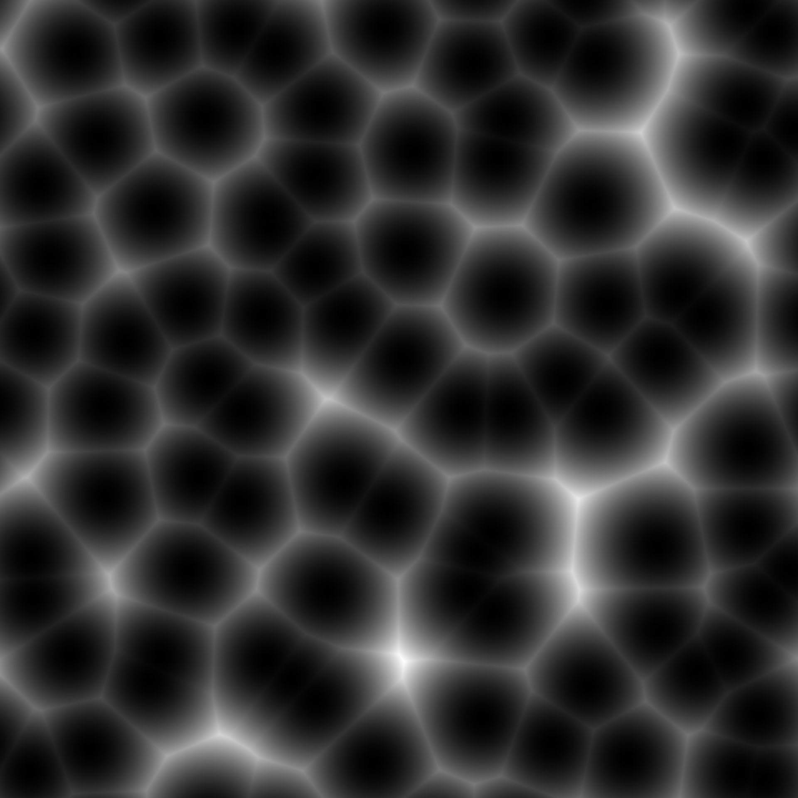
-

-
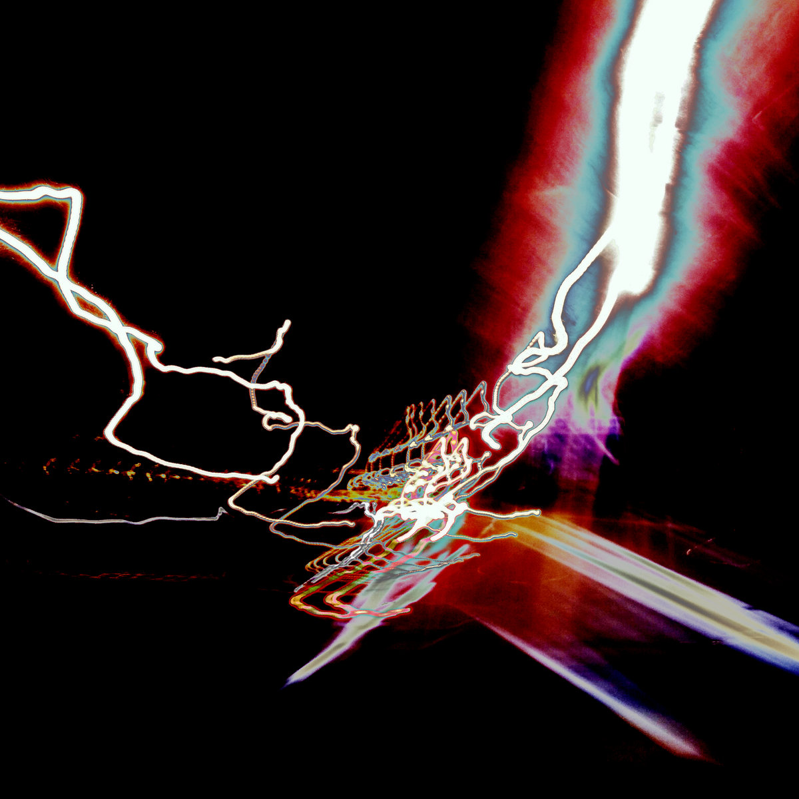
Música
Producción · Instrumentos Digitales y AnalógicosACG desarrolla proyectos musicales de naturaleza híbrida, combinando síntesis analógica, procesado digital, instrumentos acústicos modificados y herramientas de software. No existe un género fijo: el proceso y la exploración tímbrica son el eje central. Cada proyecto surge de un contexto, una pregunta o una colaboración distintos.
-

-

-
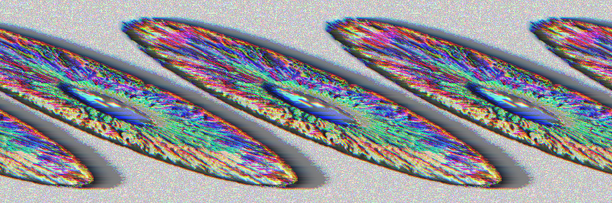
Video
Video Art · VJing · AudiovisualACG opera bajo el alias optikCalx — youtube.com/@optikcalx — para toda su práctica de creación de vídeo y sesiones VJ. optikCalx es el nombre dedicado a la producción audiovisual: glitch art, video experimental y actuaciones en directo como VJ. Las piezas combinan footage analógico y digital, explorando el error, el glitch y la saturación cromática como lenguajes propios. Con más de 10 años de trayectoria como VJ, ACG ha actuado en salas de referencia de la escena electrónica de Madrid y colabora habitualmente con el colectivo Ketapasando — ketapasando.com .
Livecoding
TidalCycles · Música Algorítmica · PerformanceEl livecoding es la práctica de componer y modificar música en tiempo real a través de código. ACG opera bajo el alias R.PHLUX.D para toda su práctica de creación musical como livecoder, utilizando principalmente TidalCycles, un lenguaje basado en Haskell diseñado para la síntesis de patrones rítmicos y melódicos. Las actuaciones son abiertas: el código es visible para el público, convirtiendo el proceso compositivo en parte del espectáculo. ACG forma parte del colectivo Live Code Mad, grupo de práctica, investigación y difusión del livecoding con sede en Madrid, con actividad continuada en espacios como Medialab-Matadero . En 2019 participó en la organización del ICLC 2019 —International Conference on Live Coding—, el congreso de referencia mundial de la disciplina.
-
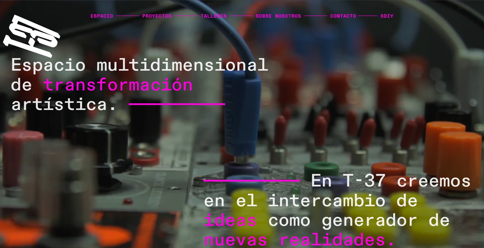
-
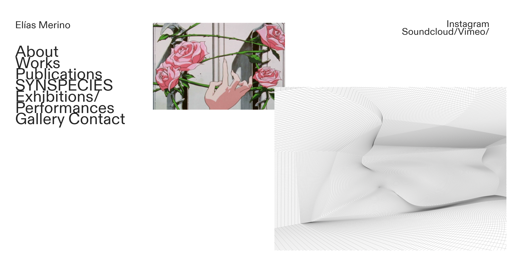
-
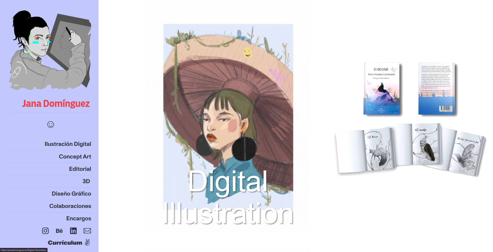
Diseño Web
Net Art · Front-End · Identidad DigitalEl diseño web es para ACG tanto un medio de expresión artística como una herramienta de construcción de identidad. Se trabaja desde la estética de la red, el net art y la contracultura digital, creando sitios que cuestionan las convenciones de la interfaz. El código es material.
T37
Asociación Cultural · DIY · MadridT37 es una asociación cultural con una ética de trabajo DIY (Do It Yourself) y una vocación de comunidad. Desde T37 se organizan y producen eventos, exposiciones, talleres y proyectos que conectan a artistas, técnicos y público interesado en las intersecciones entre arte, tecnología y cultura popular. ACG es miembro activo y ha participado en el diseño, la producción y la gestión de múltiples proyectos bajo este paraguas.
-
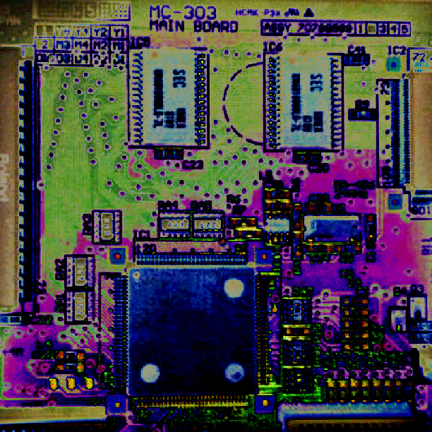
-
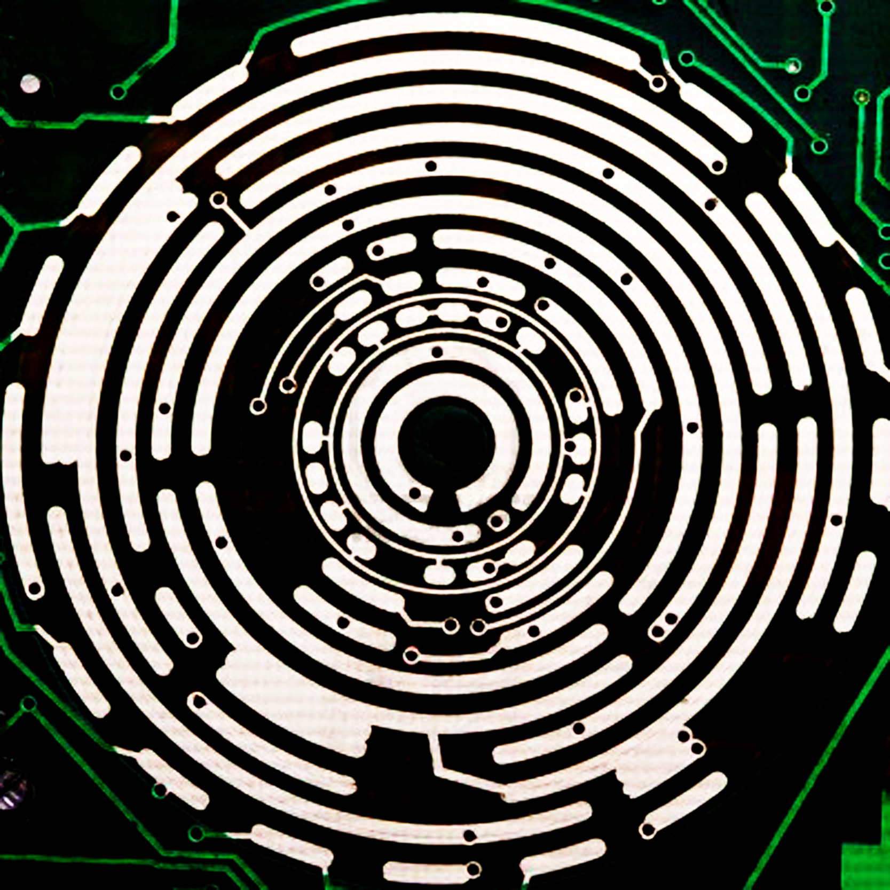
-
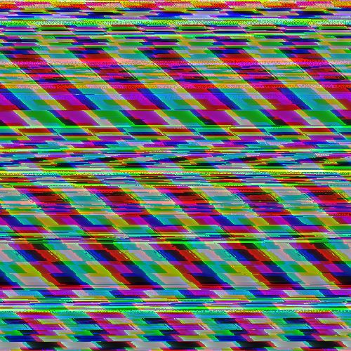
-
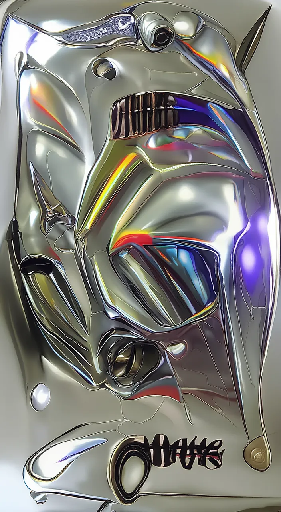
-
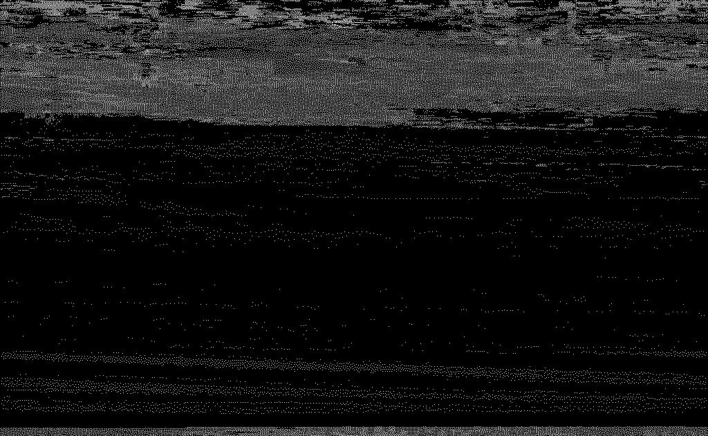
Radio
Post Apocalipsis Nau · Radio VallekasCada emisión funcionaba como un archivo sonoro vivo: mezcla de música poco conocida, entrevistas con artistas locales e internacionales, grabaciones de campo, performances sonoras y reflexiones sobre tecnología y cultura contemporánea. El nombre hace referencia a una visión irónica y esperanzadora del presente tecnológico.
Premios
Reconocimientos · AwardsEl trabajo de ACG ha sido reconocido en festivales y certámenes nacionales en las categorías de diseño, videoarte y producción audiovisual.
Sobre ACG
La identidad múltiple no es pérdida de identidad sino negativa a fijarla. Operar bajo distintos alias es también una forma de resistencia a la marca personal, al perfil único y rastreable que la lógica de plataforma exige. Si el capitalismo de red necesita sujetos identificables, la respuesta es la multiplicación y el desdoblamiento.
Esta práctica se ancla en la filosofía FLOSS (Free/Libre Open Source Software): el conocimiento como bien común, el código como escritura compartida, la autoría como proceso colectivo. Igual que el software libre se copia, se modifica y se redistribuye sin pedir permiso, los proyectos de ACG están pensados para existir en red —con otros artistas, colectivos, espacios— y no como obra cerrada de un individuo. El colectivismo no es aquí retórica: es el modo de producción.